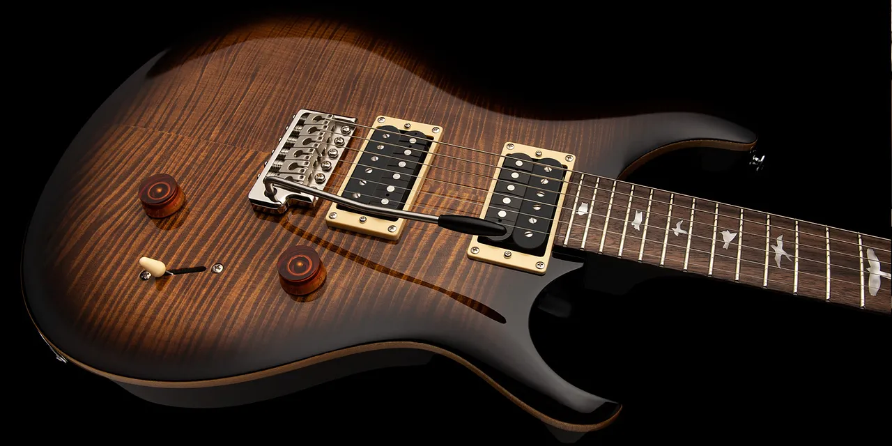
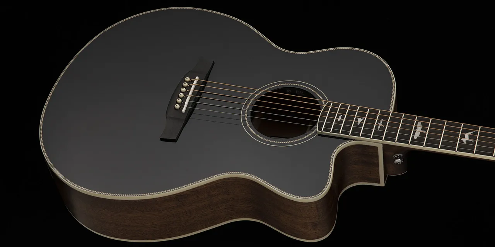

PRS Custom 24 SE
The SE Custom 24 brings the original PRS design platform to the high-quality, more affordable SE lineup of instruments. Played by internationally touring artists, gigging musicians, and aspiring players, the SE Custom 24 features a maple top, mahogany back, wide thin maple neck, rosewood fretboard with bird inlays, and the PRS patented molded tremolo. Its versatile sounds come from the 85/15 “S” pickups paired with a volume, push/pull tone control, and 3-way blade pickup selector.
PRS Acoustic SE A20E
The PRS SE A20E brings all-mahogany construction to our best-selling body shape: the Angelus Cutaway. The Angelus Cutaway body shape delivers comfort and playability and is well-suited for picking and fingerstyle playing. The all-mahogany body gives the PRS SE A20E an organic, warm voice. When matched with PRS hybrid “X”/Classical bracing, which allows the top to freely vibrate and project, the SE A20E’s voice projects with breathtaking volume and delicate nuance.
